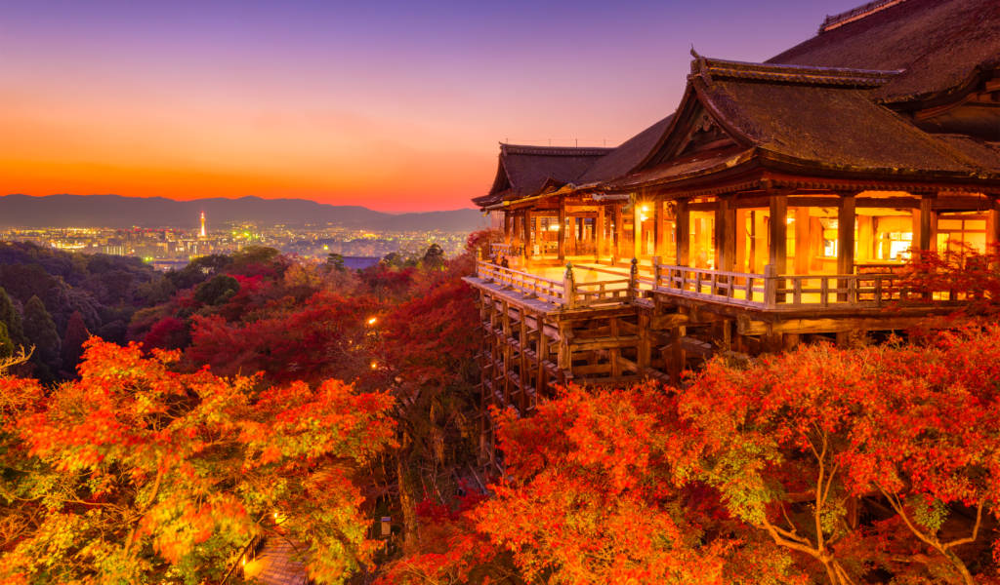

Menu
| Services Available (2022) | Description | Prices |
|---|---|---|
|  | Kyoto Private Custom Walking and Sightseeing Tour
Take control of your Kyoto sightseeing and visit only the sights you wish to see on this private walking tour. Ideal for first-time visitors, this tour lets you customize a half-day or full-day itinerary. Opt to visit the Golden Pavilion (Kinkaku-ji), Fushimi Inari Shrine, and Nijo Castle, or to stray from the beaten path to see an alternative side of Kyoto. Hotel pickup and drop-off are included. Private tour of Kyoto with optional half-day or full-day itinerary. Customize the itinerary according to personal interests. Tick off Kyoto highlights including the Golden Pavilion, Fushimi Inari Shrine, and Kiyomizu area, Gion. Entrance fees, transportation fees and lunch (you & guide) are not included. |
$157.00 |
 |
Private Full Day Sightseeing Tour to Mount Fuji and Hakone
Check out one of Japan's most beautiful, iconic destinations—Mt. Fuji—on this convenient day tour from Tokyo. Visit several places in the Fuji area from where you can get beautiful views of the mountain (weather permitting), including Hakone, Lake Kawaguchi, the 5th Station on Mt. Fuji, and more. As this is a private tour, you can customize the itinerary to suit your own interests. The flexible itinerary can be adjusted to suit your needs. See as much or as little as you like during the day, as this is a private tour for you. An easy and hassle-free way of visiting the Fuji area from Tokyo Travelers with a range of interests will enjoy the attractions around Mt. Fuji |
$560.78 |
 |
Private Highlights of Akihabara Tour
Akihabara, also commonly known as “Electric Town,” is the go-to district in Tokyo for electronics and a popular spot to immerse in anime and manga culture. The area’s hundreds of stores sell everything from computer parts to home goods, and north of Akihabara Station, you’ll also find video games and popular manga-related items. |
$184.65 |
| Go-Kart Shinjuku Drive Metroporitan Area
This will be a tour you never forget. You'll get to choose a costume from a wide selection of sizes and styles, based on comics, games, and anime characters. You won’t have to worry about getting lost, as your guide will lead the way, and give a full safety briefing at the start. Drive past top attractions such as Rainbow Bridge, Tokyo Tower, Roppongi, and Shibuya Crossing. A fun and memorable way to tour Tokyo. Dress up as your favorite computer game or comic character. Tour Tokyo in a super fun way—in a go-kart tour group. No getting lost—you’ll have a guide to lead the way Great way to get your bearings of Tokyo and see top sites such as Shibuya. |
$104.89 |